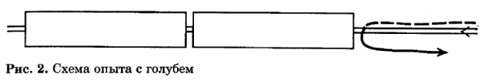
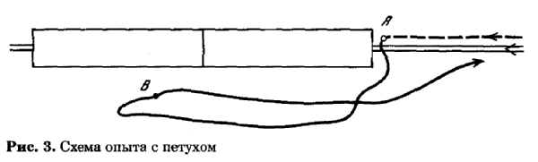
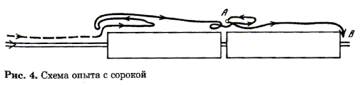
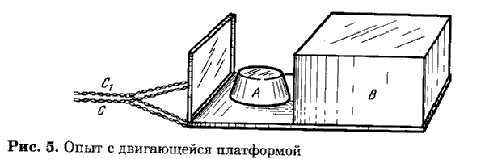
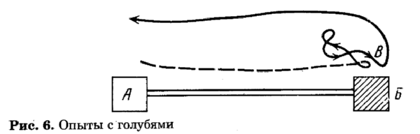
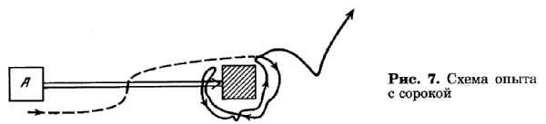
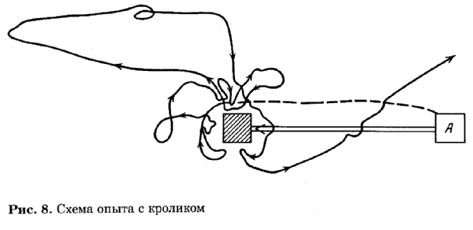
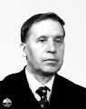

У исследованных птиц не было обнаружено ни малейшей реакции на двигающуюся платформу без корма. Однако птицы продолжали реагировать на платформу, если стоящий на ней корм закрывался у них на глазах крышкой.
Изучение экстраполяционных рефлексов
Проблемы поведения животных (Избранные труды 30-40х годов)
М.Наука,1993,320с,стр.63-74
Л.В. Крушинский
МАТЕРИАЛ И МЕТОД
При выборе материала для изучения экстраполяционных рефлексов мы исходили из положения о необходимости начать это исследование на животных с относительно простыми формами их высшей нервной деятельности, так как можно было ожидать, что у таких животных изучаемые рефлексы должны проявляться в своем наиболее простом и обнаженном виде.
Наиболее удобными объектами для этой цели в качестве первой ступени изучения экстраполяционных рефлексов оказались птицы и кролики. (Чтобы исключить возможную роль обоняния в проводимых формах опытов, у всех подопытных кроликов были предварительно разрушены обонятельные луковицы.) (Проводимые исследования на более высокоорганизованных животных послужат материалом для последующих сообщений.) Из птиц мы наиболее детально изучили голубей, кур и врановых птиц (ворон, сорок и грачей). Врановые птицы должны быть совершенно ручными; лучше всего подходят для этой цели птицы, вынутые из гнезд птенцами и выращенные в лаборатории.
Изучение экстраполяционных рефлексов производилось на фоне пищевых безусловных рефлексов. Пищевая возбудимость животных должна быть при этом достаточно высокой; поэтому животные до начала опыта в течение суток не получают пищи.
В качестве пищевого раздражителя использовались: для кур - пшено; для голубей - конопля; для врановых птиц - мясо, яйца; для кроликов - морковь, свекла. Опыты проводились в лабораторном помещении; животные имели возможность свободно передвигаться по всей лаборатории.
Общий принцип, который лег в основу проводившихся опытов, заключался в следующем. Пищевой раздражитель А движется прямолинейно с постоянной скоростью. Первоначальный отрезок его движения проходит на виду у животного, даже больше того, животное имеет возможность не только видеть, но подкармливаться от А. Продвинувшись определенный отрезок своего пути на виду у животного, раздражитель А уходит из поля зрения животного. Достигается это тем, что некий предмет В загораживает собой предмет А и тем самым пресекает возможность последующего зрительного восприятия его.
Выяснялось: могут ли животные, несмотря на то, что они перестают воспринимать своим рецепторным аппаратом раздражитель А, тем не менее экстраполировать направление его движения?
Основная задача сводится, таким образом, к двум этапам, во время которых животные должны были:
- Определить из соотношения с неподвижными точками пространства изменение положения (движения) точки (раздражителя) А.
- Определить по изменению этого соотношения неизвестную величину (направление движения А).
В соответствии с только что изложенным общим принципом постановки эксперимента были проведены конкретные опыты.
ЭКСТРАПОЛЯЦИОННЫЕ РЕФЛЕКСЫ
а. Опыты с коридором
Метод исследования заключался в следующем: кормушка с кормом движется по рельсу со средней скоростью 8-10 см в секунду. Первые 1,5м она движется открыто, так что животное имеет возможность идти за кормушкой и есть из неё корм. После этого кормушка въезжает в закрытый со всех сторон коридор (туннель). Как только корм въезжает в коридор, его выходное отверстие закрывается клапаном и животное перестает видеть корм, двигающийся по коридору. Коридор состоит из двух половин длиной по 1,5 м. В некоторых вариантах опыта между обеими половинами коридора оставлялась щель (3-5 см), через которую животное имело возможность увидеть кормушку с кормом в тот момент, когда она продвигалась мимо щели.
Во время опыта производится регистрация того:
- Делает ли животное попытки искать корм в месте его исчезновения в коридоре и в направлении его движения по коридору.
- В течение какого времени и на какое расстояние производится поиск корма вдоль коридора.
Перед тем как проводить опыт с кормушкой, наполненной кормом, производится контрольный опыт, при котором по коридору движется пустая кормушка. Различие в поведении животного при движении пустой кормушки и кормушки с кормом показывает: ищет ли действительно животное корм после его исчезновения или проявляет ориентировочную реакцию на шум двигающейся по коридору кормушки.
Для выяснения того, не служит ли шум двигающейся по коридору кормушки с кормом ориентиром для направления его поиска, проводились также контрольные опыты, в которых сразу после того как кормушка с кормом скрывалась, она останавливалась. Эти опыты показали, что те животные, которые ищут корм по направлению его движения вдоль коридора, ищут его независимо от того, остановился он или продолжает двигаться в коридоре. Эти контрольные опыты показали, что шум, производимый двигающейся кормушкой, не является существенным ориентиром для животного в поиске корма, двигающегося в коридоре.
Опыты с голубями
Результаты проведенных опытов с голубями оказывались весьма однородными. Во всех 14 опытах, проведенных с ними, голуби шли за двигающейся кормушкой, клюя из неё корм, но как только кормушка исчезала в коридоре, большинство голубей сразу отходило от коридора и шло назад вдоль рельса, по которому только что двигался корм. Только в одном опыте голубь (№ 1) после исчезновения кормушки с кормом отошел в сторону от коридора и остановился там, ощипывая перья; в двух других опытах голуби (№ 2 и 3) делали очень короткие (3 и 1 с) остановки около начала коридора после исчезновения в нем корма.
Пример. Голубь № 5. Опыт 14/V. Скорость движения кормушки 10 см/с. Кормушка двигается по рельсу 1,5 м, после чего скрывается в коридоре. Голубь идёт и клюет корм из кормушки; как только кормушка исчезает в коридоре, голубь сразу отходит от коридора, перескакивает на другую сторону рельса и идёт вдоль него назад в противоположную сторону движения корма (рис. 2).

Проведенные опыты показали, таким образом, однородный результат: у голубей после исчезновения кормушки с кормом в коридоре нет никакой попытки к его поиску по направлению движения корма. Даже больше того, голуби сразу после того как корм исчез в коридоре, идут назад в направлении, обратном направлению движения корма, - по тому пути, вдоль которого они только что клевали корм.
Опыты с курами
Проведенные опыты показали, что куры заметно отличаются от голубей по своей реакции на исчезнувший в коридоре корм.
Основное, чем характеризуется поведение большинства кур после исчезновения кормушки, это короткий поиск около места исчезновения корма в коридоре. Чтобы проверить, не случайны ли задержки кур около начала коридора, были проведены контрольные опыты с движением пустой кормушки. Время задержки кур около начала коридора, т. е. того места, где исчез корм, в случае движения кормушки с кормом и кормушки без корма приведено в табл. 1.
Таблица 1. Сравнение времени задержки кур около начала коридора при движении кормушки с кормом и без корма (по первому опыту с каждой птицей)
| № | Кличка | Пол | Время(с.) поиска при движении кормушки | № | Кличка | Пол | Время(с.) поиска при движении кормушки | ||
| с кормом | пустой | с кормом | пустой | ||||||
| 1 | Левый | м | 70 | 10 | 13 | Сова | ж | 2 | 0 |
| 2 | Правый | м | 43 | 4 | 14 | 1715 | ж | 33 | 0 |
| 3 | Бандит | м | 0 | 0 | 15 | Чернушка | ж | 6 | 7 |
| 4 | Крючок | м | 7 | 0 | 16 | Пеструшка | ж | 0 | 0 |
| 5 | Прямой | м | 16 | 0 | 17 | Боевик | м | 0 | 0 |
| 6 | 1714 | ж | 0 | 0 | 18 | Рыжик | м | 4 | 0 |
| 7 | 1728 | ж | 0 | 0 | 19 | Юркий | м | 12 | 0 |
| 8 | 1724 | ж | 18 | 0 | 20 | Красавец | м | 4 | 0 |
| 9 | 1702 | ж | 10 | 0 | 21 | Спорный | м | 12 | 0 |
| 10 | 17113 | ж | 30 | 0 | 22 | Хвостун | м | 5 | 0 |
| 11 | Рогулька | ж | 3 | 0 | 23 | Точка | ж | 0 | 0 |
| 12 | 1742 | ж | 18 | 0 | 24 | Мохнатка | ж | 7 | 0 |
В качестве примера поиска исчезнувшего в коридоре корма можно привести опыт с петухом по кличке Левый.
Опыт 11/IV. Скорость движения кормушки 10 см/с. Открытый путь движения кормушки 1,5 м. Петух идёт за пустой кормушкой и смотрит в неё. После того как кормушка исчезла вкоридоре, петух простоял в течение 10 с. около его начала и, отойдя в сторону от коридора, пошел вдоль коридора, затем вернулся обратно (рис. 3).

А - место остановки петуха;
В - место, в котором находился петух, когда кормушка выезжала из коридора
У некоторых особей наблюдаются поисковые движения не только около начала коридора, но даже короткие движения в направлении движения корма, исчезнувшего в коридоре.
Опыты показывают, что некоторые куры после исчезновения корма в коридоре не только производят его поиск в самом начале коридора, но делают короткие экстраполяционно-рефлекторные движения вдоль коридора до 50 см. Однако наиболее характерным для кур является короткая задержка около начала коридора с поиском корма в том месте (в начале коридора), где он исчез.
Опыты с врановыми птицами
Опыты с врановыми птицами показали резкое их отличие в характере поиска исчезнувшего в коридоре корма как от голубей, так и от кур. Все восемь исследованных птиц после исчезновения корма очень активно в течение длительного времени искали корм вдоль коридора. Все птицы искали корм не только в месте его исчезновения, т. е. в начале коридора, но и вдоль коридора. Поиск пустой кормушки отсутствовал.
В табл. 2 представлены результаты проведенных опытов.
Таблица 2. Сравнение времени и расстояния поиска корма вдоль коридора у врановых птиц при движении кормушки с кормом и без корма (по первому опыту с каждой птицей)
| № | Кличка | Вид | Поиски при движении кормушки | |||
| с кормом | без корма | |||||
| время(с.) | расстояние(см.) | время(с.) | расстояние(см.) | |||
| 1 | Пава | Ворона | 50 | 300 | 0 | 0 |
| 2 | Машка | " | 45 | 150 | 0 | 0 |
| 3 | Варя | " | 47 | 240 | 0 | 0 |
| 4 | Варяг | " | 75 | 120 | 2 | 10 |
| 5 | Краля | " | 51 | 230 | 0 | 0 |
| 6 | Жюля | Сорока | 15 | 150 | 0 | 0 |
| 7 | Безымянка | " | 80 | 120 | 10 | 0 |
| 8 | Артемида | " | 50 | 150 | 0 | 0 |
В качестве примера поиска исчезнувшего корма можно привести опыт с вороной по кличке Варя.
Опыт 1/Х. Скорость движения кормушки 8 см/с. Открытый путь движения кормушки 1,5 м. Ворона бежит за кормушкой с закрепленным в ней куском мяса и клюет его. Как только кормушка исчезает в коридоре, ворона бросается вдоль коридора, пробегает 240 см, возвращается назад - идёт к началу коридора, но, не дойдя до него, снова идёт вперёд по ходу движения корма. Через 47 с поиск корма прекращается и ворона отходит от коридора.
Очень показательными оказались опыты, проведенные с некоторыми из наших птиц, в которых оба колена коридора не были приставлены вплотную друг к другу, а между ними была оставлена небольшая щель, через которую птицы могли увидеть корм в момент его продвижения мимо щели.
В двух случаях птицы, увидев продвигающийся мимо щели корм, моментально бросались вдоль колена к концу коридора и задерживались там (рис. 4).

А - точка, в которой находилась сорока, когда корм проходил мимо щели;
В - точка, в которой она ожидала корм
Проведенные опыты ясно проиллюстрировали огромную разницу в характере поиска исчезнувшего в коридоре корма у всех восьми исследованных врановых птиц по сравнению с курами и голубями.
Опыты с кроликами
Опыты, проведенные с кроликами, показали, что по характеру поиска корма, исчезающего в коридоре, последние приближаются к курам. В табл. 3 представлены результаты проведенных опытов.
Таблица 3. Время и расстояние поиска корма вдоль коридора (результаты первого проведенного опыта)
| № | Кличка | Пол | Поиск корма при движении кормушки | |
| время, с | расстояние, см | |||
| 1 | Колька | 40 | 150 | |
| 2 | Вислоушка | 22* | 0 | |
| 3 | Серка | 7* | 0 | |
| 4 | Карлик | 5* | 0 | |
| 5 | Пышка | 12* | 0 | |
| * Задержка около начала коридора. | ||||
На основании как первых, так и последующих опытов, может быть сделан несомненный вывод, что кролики продолжают в течение некоторого времени искать корм в месте его исчезновения, а в одном случае этот поиск осуществился и вдоль коридора.
Во всех последующих опытах с нашими подопытными кроликами наблюдалась сходная картина: они или задерживались, производя в некоторых случаях ясно выраженный поиск корма около начала коридора, или делали короткие поисковые пробежки вдоль коридора.
Подводя итог проведенным опытам, мы можем сделать следующий вывод. Наблюдается огромное различие в степени выраженности экстраполяционных рефлексов при поиске двигающегося и исчезающего в коридоре корма. У голубей не было обнаружено никаких намеков на наличие этих рефлексов. У кур и кроликов после исчезновения корма происходит его поиск в том месте, где он исчез, причем этот поиск в некоторых случаях распространяется и вдоль начальной части коридора. У врановых птиц способность экстраполировать направление движения исчезнувшего в коридоре корма прекрасно развита. Эти птицы не только ищут корм вдоль коридора, но и способны экстраполировать то место, в которое двигается корм.
б. Опыты с двигающейся платформой
Опыт заключался в следующем: на металлической платформе размером 18,5 х 37,5 см находится двигающаяся в пазах крышка, которая может быть вплотную придвинута к передней стенке платформы. Кормушка с кормом, поставленная между передней стенкой платформы и подвижной крышкой, может быть в нужный момент задвинута крышкой (рис. 5).

А - кормушка с кормом;
В - крышка, закрывающая кормушку;
С и С1, - шнуры, при помощи которых приводятся в движение платформа и крышка
Опыт заключается в том, что двигающийся на платформе корм (раздражитель А) закрывается крышкой (В) и платформа после этого либо сразу останавливается, либо продолжает двигаться в том же направлении.
Животное в этом опыте для достижения корма (Животные, несмотря на попытки достать корм, не в состоянии отодвинуть крышку) должно произвести два элементарных акта, которые могут быть описаны следующим образом: 1) определить, что А не исчезло, а лишь закрыто В (находится в В); 2) определить, что если А находится в В, а В продолжает двигаться, значит, и А продолжает двигаться в В.
В том случае, когда платформа останавливается сразу после того, как В закрывает А, для животного достаточно произвести первый акт и искать А в том месте, где оно исчезло в В. Для этого, очевидно, достаточно установить ассоциацию между А и В. В том случае, когда платформа продолжает двигаться, после того как В закрыло А, животное должно, помимо первого акта, продолжать поиск А не в том месте, где оно исчезло, а в продолжающем двигаться В.
Опыты с голубями
При закрывании корма и одновременной остановке двигающейся платформы голуби или сразу отходили от платформы, или, в половине проводимых опытов, у них наблюдались короткие (на 4 - 8 с) задержки около остановившейся платформы (только в одном случае голубь в течение 80 с то отходил, то снова возвращался к остановившейся платформе, после чего впрыгнул на крышу платформы и начал чистить перья) (рис. 6).

А - платформа с открытым кормом;
Б - платформа с закрытым кормом; двойная линия - движение кормушки; пунктир - движение животного до того как кормушка была закрыта; сплошная линия - движение животного после того как кормушка была закрыта;
В - место остановки голубя.
В опытах, когда корм закрывался крышкой и платформа после этого продолжала двигаться, голуби в большинстве случаев сразу отходили от двигающейся платформы и больше не реагировали на неё. Из 19 проведенных опытов только в одном случае голубь (№ 2) сделал несколько шагов за закрывшимся и продолжающим двигаться на платформе кормом и после этого отошел; в другом случае голубь (№ 5), отойдя сразу от двигающейся платформы, на которой корм был задвинут крышкой, сделал два больших круга по лаборатории, затем подошел к продолжающей двигаться платформе и сразу отошел от неё.
Подводя итог проведенным опытам с голубями, можно сделать вывод, что характерным для их поведения является моментальный отход или только краткая задержка в течение 4 - 8 с около закрывшегося и одновременно с этим остановившегося корма. Если же корм закрывается, но продолжает двигаться, голуби в большинстве случаев сразу отходят от двигающей платформы.
Опыты с курами
Результаты проведенных опытов с курами приведены в табл. 4.
Таблица 4. Реакция кур на двигающийся и остановившийся после закрывания корм (результаты первого испытания каждой птицы)
| № п/п | Кличка или номер птицы | Пол | Реакция на закрываемый корм | ||
| останавливающая платформа | платформа, продолжающая движение | ||||
| Время реакции, с | время реакции, с | движение за платформой, см | |||
| 1 | Бандин | 17 | 0 | 0 | |
| 2 | Крошка | 32 | 1 | 10-12 | |
| 3 | Желтушка | 30 | 0 | 0 | |
| 4 | Правый | 26 | 16 | 125* | |
| 5 | Крючок | 30 | 0 | 0 | |
| 6 | Хвостун | 55 | 0 | 0** | |
| 7 | 1714 | 40 | 5 | 40 | |
| 8 | 1728 | 55 | 8*** | 5-6 | |
| 9 | 1724 | 65 | 9*** | 0 | |
| 10 | Чернушка | 38 | 8*** | 0 | |
| 11 | Голышка | 44 | 8 | 0 | |
| 12 | Пеструшка | 37 | 9*** | 0 | |
| 13 | Мохнатка | 57 | 10 | 100 | |
| 14 | Рогулька | 16 | 0 | 0 | |
| 15 | Точка | 18 | 0 | 0 | |
| 16 | Рыжик | 12 | 5*** | 0 | |
| 17 | Юркий | 14 | 0 | 0 | |
| 18 | Красавец | 16 | 6*** | 0 | |
| 19 | Спорный | 80 | 3*** | 0 | |
| 20 | Сова | 13 | 10*** | 0 | |
| 21 | Боевик | 8 | 5*** | 0 | |
* Контрольные опыты, проведенные с этим петухом, показали, что он шел за различными движущимися предметами, проявляя признаки ориентировочной реакции. Поэтому вероятно, что и в проведенном опыте движение за закрытым и двигающимся кормом также связано с ориентировочным рефлексом петуха на двигающийся предмет.
** Когда двигающийся корм был закрыт, петух сразу же отошел от него, пошел назад, однако после этого догнал платформу, подошел к ней на расстояние 20-25 см и сразу отошел.
*** Куры не шли, а продолжали стоять на том месте, где они находились, когда двигающийся на платформе корм был закрыт крышкой.
Из приведенной таблицы видно, что все куры при закрывании корма и одновременной остановке платформы реагируют в течение нескольких десятков секунд. Все они активно разыскивают корм в остановившейся платформе с закрытой крышкой. В том же случае, когда платформа после закрывания корма крышкой продолжает двигаться, куры или сразу отходят от неё, или в течение 6 - 9 с продолжают стоять на том же месте, где был закрыт корм, производя иногда при этом разгребательные движения лапами. И только очень немногие куры идут за закрытым и продолжающим двигаться на платформе кормом.
Для иллюстрации типичного случая приведем опыт с курицей Чернушкой. Опыт 20/XII.Платформа со стоящей на ней пустой кормушкой двигается со скоростью 11 см/с. После того как платформа продвинулась на 1,5 м, кормушка закрывается крышкой, но платформа продолжает двигаться ещё 2,5 м. Курица, находившаяся в начале движения около платформы, совершенно не реагирует на неё.
Таким образом, на основании проведенных опытов выяснилось, что все куры продолжают поиск закрытого и остановившегося корма и только немногие из них реагируют на закрытый и продолжающий двигаться корм.
Опыты с врановыми птицами
Исследования, проведенные с врановыми птицами, показали, что они производят поиск закрытого корма как в случае его остановки, так и в том случае, когда он продолжает двигаться. В табл. 5 представлены результаты проведенных опытов.
Таблица 5. Реакция врановых птиц на двигающийся и останавливающийся после закрывания корм (результаты первого испытания каждой птицы)
| № п/п | Кличка | Вид | Реакция на закрываемый корм | ||
| останавливающаяся платформа | платформа, продолжающая движение | ||||
| время реакции, с | время реакции, с | движение за платформой, см | |||
| 1 | Пава | Ворона | 45* | 29 | 250 |
| 2 | Машка | " | - | 10 | 80 |
| 3 | Варя | " | 124* | 8 | 90 |
| 4 | Варяг | " | 53 | 35 | 250 |
| 5 | Жюля | Сорока | - | 10 | 100 |
| 6 | Безымянка | " | 30 | 38 | 250 |
| 7 | Артемка | " | 88 | 30 | 250 |
| * Обеим воронам удалось в конечном счете отодвинуть крышку и достать корм. | |||||
Из таблицы видно, что у всех исследованных врановых птиц была реакция на платформу с закрытым кормом независимо от того, останавливается она или продолжает двигаться. Во всех случаях реакция на закрытый корм была ярко выражена: птицы упорно стремились заглянуть и проникнуть под крышку, надвинувшуюся на корм. Для того чтобы проверить, не является ли это ориентировочной реакцией на новый двигающийся объект, опыт во всех случаях начинали с движения пустой платформы без корма. Ни в коем случае у исследованных птиц не было обнаружено ни малейшей реакции на двигающуюся платформу без корма. Однако во всех случаях птицы продолжали реагировать на платформу, если стоящий на ней корм закрывался у них на глазах крышкой.
Для примера опишем опыт с сорокой Безымянкой. Опыт 28/IV. Платформа, на которой стоит кормушка с кормом, двигается со скоростью 5 см/с. Сорока клюет мясо, однако проявляет некоторые симптомы боязни двигающейся платформы. После того как платформа продвинулась на 1,5 м, корм закрывается крышкой и одновременно останавливается. Сорока в течение 30 с обегает два раза со всех сторон платформу, стараясь заглянуть под надвинувшуюся на корм крышку. Затем отходит и больше не реагирует на платформу (рис. 7).

Исследования, проведенные с воронами и сороками, ясно показали, что их поведение в описанном опыте резко отличается от поведения голубей и кур. Их реакция на закрытый корм, независимо от того, остановился он после закрывания или продолжал двигаться, была ярко выражена и направлена на попытку достать его из-под надвинувшейся на него крышки.
Опыты с кроликами
Проведенные опыты показали, что кролики продолжают поиск закрытого корма независимо от того, останавливается или продолжает двигаться после этого платформа, на которой он находится. В табл. 6 приведены результаты проведенных опытов. Кролики упорно ищут закрытый корм как в случае его остановки, так и в случае его движения.
Таблица 6. Реакция кроликов на двигающийся и останавливающийся после закрывания корм (результаты первого испытания каждого кролика)
| № п/п | Кличка | Пол | Реакция на закрываемый корм | ||
| останавливающаяся платформа | платформа, продолжающая движение | ||||
| время реакции, с | время реакции, с | движение за платформой, см | |||
| 1 | Колька | 14 | 33 | 170 | |
| 2 | Вислоушка | 90 | 25 | 150 | |
| 3 | Серка | 90 | 20 | 150 | |
| 4 | Пышка | 47 | 30 | 150 | |
20/XI. Опыт с кроликом Серкой. Платформа со стоящей на ней кормушкой с кормом двигается со скоростью 8,5 см/с. Кролик идёт за платформой и гложет морковь. После того как платформа продвинулась на 1,5 м, корм закрывается и платформа одновременно с этим останавливается. Кролик в течение 35 с непрерывно вертится около платформы, пытаясь проникнуть головой под крышку, и, обежав её с разных сторон, отбегает на расстояние 2-2,5 м; на 65-й секунде снова подбегает к платформе, обегает её, на 90-й секунде отбегает от неё и не возвращается больше к ней (рис. 8).

Опыты показывают, что кролики обладают способностью к поиску корма, закрытого крышкой, не только в случае его остановки, но и в том случае, если он после этого продолжает двигаться.
Проведенные исследования показали, что животные обладают не только элементарной способностью сохранять следы от подействовавших безусловно-рефлекторных раздражителей; они реагируют не только на непосредственно действующий раздражитель или на то место, на котором он находился, но они обладают также способностью к поиску этого раздражителя и в направлении его движения, после того как этот раздражитель перестал оказывать непосредственное влияние на рецепторный аппарат животного. Это указывает на способность животных к экстраполяции направления движения раздражителя. Однако способность к экстраполяции выражена, как показывают проведенные исследования, у разных животных в весьма различной степени. Мы практически не смогли её обнаружить в проведенной форме опыта у голубей. Единственно, что у них иногда наблюдается, это очень короткая (на несколько секунд) задержка на том месте, где исчез двигающийся корм. У кур и кроликов, видимо, можно говорить уже о наличии экстраполяционных рефлексов. И, наконец, у изученных врановых птиц имеется ярко выраженная способность к эктраполяции: они активно ищут исчезнувший из поля их восприятия раздражитель в направлении его движения и способны к элементарному предусмотрению того места, куда он двигается.
Проведенные опыты, показавшие наличие у животных экстраполяционных рефлексов, дали основание для дальнейшего шага исследования - изучения взаимоотношения между экстраполяционными и условными рефлексами.

Леонид Викторович Крушинский
(1911-06-16 - 1984-05-25)
Член-корреспондент АН СССР по Отделению общей биологии.
Впервые в СССР начал экспериментальное изучение элементарной рассудочной
деятельности животных.